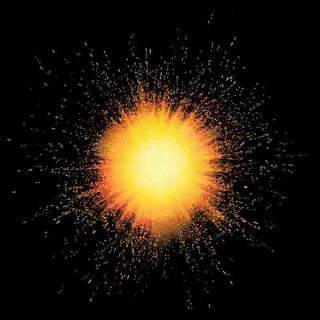
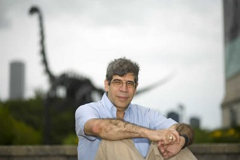
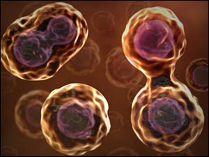

No sé si alguna vez creí seriamente que el Universo había sido erigido por un ser sobrenatural en siete días, bueno, en seis; aunque fue la historia que me enseñaron en el colegio cuando era niña. Y a pesar de que nadie jamás haya mencionado la evolución en aquellos salones gobernados (alegremente) por monjas, la biología tiene su lenguaje propio y fue la célula que muy pronto actuó como catalizador de mi intelecto. Una vez aprendí sobre sus mecanismos y supe que todo ser vivo está compuesto de ellas, las cosas comenzaron a cambiar y una curiosa idea se filtró en mi cerebro: quise saber qué era la vida.
Afortunadamente, nací en tiempos donde el conocimiento abunda y muy pronto aprendí que dentro de las células están las moléculas de la vida, donde se originan los programas para desarrollar a cada organismo; moléculas de ADN y ARN con sus copiadoras y sus planos poseen las recetas de las proteínas que las células son capaces de producir.

Pero la aventura no termina ahí. Si continuaba profundizando, el mundo subatómico venía a mi encuentro con una tabla de partículas subatómicas incompleta y más atemorizante que la que memoricé en aburridas clases de química con profesores que, al parecer, o no entendieron nada y/o habían perdido la fe en los estudiantes.
Los seres vivos no tenemos la exclusividad de los átomos, como ocurre con las células, estos bichos extraños compuestos de otros con comportamientos aún más bizarros, se encuentran en todo el Universo conocido y sus ‘nanomovimientos’ estremecen a cabalidad nuestro mundo: desde la pantalla que miro mientras escribo estas ideas hasta los ojos que hacen posible esa acción.
{kind=link}
Evidentemente somos curiosos y esta cualidad ha sido un impulso vital en la acumulación de conocimiento, sino, fíjense en estos portentosos números: la astrofísica calcula que el Cosmos debe tener de unos 13,600 a 14,000 millones de años desde la Gran Explosión que posiblemente lo originara (no vamos a entrar en cuerdas aquí). Estudios geológicos y astronómicos sobre nuestro planeta y los demás en el Sistema Solar afirman que la Tierra tiene 4,000 millones de años y que la vida aquí dentro pudo haberse originado hace unos 3,600 millones de giros alrededor del Sol. La genética y la antropología poseen evidencias varias sobre el tiempo que tienen distintos tipos de homínidos rondando sobre la superficie terrestre: de seis a siete millones de años; y se estima que la “mente” humana moderna, con esa capacidad de computación, abstracción y simbolismo que tanto nos distingue de las demás especies, sostuvo un cambio significativo durante la Era Paleolítica, 800,000 años atrás.
Es sólo un diminuto resumen de los datos complejos sobre el origen del mundo que tenemos hoy a nuestra disposición, sin embargo, gran parte de la población los desconoce. He realizado pequeñas y discretas encuestas personales, tanto en el trabajo como en otros lugares (eventos familiares, supermercados, colegios, en el campo y en construcciones, a vendedores, en el ciberespacio, en aeropuertos…), y los resultados no han sido alentadores. Aquella historia que escuché de niña sigue viva en la mayoría de mis encuestados, la versión en la que elijan creer depende del nivel de educación y/o el grado o tipo de evangelización al que hayan sido sometidos.
He observado que en mi país, muchos católicos han optado por evolucionar con los tiempos y aceptar los resultados científicos; han asumido que Dios, de alguna misteriosa forma, es responsable de todo lo demás. Pero otras denominaciones con distintas versiones de la misma historia no corren por el mismo iluminado camino. Una señora cincuentona me explicó una vez durante un soleado aterrizaje en San Salvador, que sólo cuando estemos muertos conoceremos la verdad a través de nuestro primer encuentro con Dios, mientras que un joven homosexual afirmaba en la fila del ‘deli’ que sólo a través de la meditación y el ayuno alcanzaremos Nirvana, donde la verdad es revelada pausadamente a través de toda una vida. Aún así, la gran mayoría de las personas que he “encuestado” cree que la verdad sólo está disponible a través de su profeta. Elige uno.
Ha sido precisamente la fijación religiosa por explicar los orígenes del mundo que ha generado el conflicto entre la iglesia y el laboratorio. Es en ese lugar donde los caminos se bifurcan, un área donde algunos científicos creyentes han intentado acampar con el objetivo de integrar la ecuación divina en la experimentación. No obstante, para obtener algún tipo de resultado, los dioses retratados en los libros sagrados deben cambiar. Este nuevo Dios origina al Universo, dotándolo de un algoritmo que permite la evolución de las especies, siendo el ser humano y la moral sus “objetivos divinos”.
Es más o menos la propuesta de Robert Wright, autor del libro La evolución de Dios y una de esas voces que intentan conciliar la ciencia con la religión. Para Wright, tanto los creyentes como los ateos necesitan ceder en estos puntos claves: los primeros deben aceptar a un Dios distinto al que describe la Biblia, un ser capaz de originar la creación como la conoce la ciencia para luego alejarse con la certeza de que la selección natural se encargará de originarnos; los segundos, por su parte, deben admitir las posibilidades de que exista un propósito detrás del proceso evolutivo y de que un Dios pudiese haber dotado al Universo con moral y designio.
El problema fundamental para los científicos es el mismo de siempre: falta de evidencias que apoyen tal propósito y pruebas existentes que se decantan más bien por lo contrario.
{kind=link}
“La idea de Wright no es consistente con el materialismo científico ya que hasta el momento no existe la más mínima evidencia de que la selección natural sea algo más que la inevitable consecuencia de genes compitiendo unos con otros por representación en generaciones futuras”, explicó el biólogo Jerry A. Coyne, autor del libro Why Evolution is True. “Que el proceso completo pudo haber sido diseñado por Dios con el propósito de alcanzar ciertos fines es una bala que yo, por el momento, no estoy dispuesto a morder”.
Para Coyne, la evolución podría ser “compatible” con un dios como el propuesto por los deístas en el siglo XVIII, un ser que haya originado el Cosmos y que luego haya desaparecido quién sabe dónde sin influir en su desarrollo, pero no puede aceptar una deidad como la propuesta por Wright, que inyecta un propósito en el Universo e ingenia una forma de asegurar la creación humana.
“Me es imposible creer que un Dios creó el Universo con el único designio de desarrollar seres morales”.
Pero a los humanos nos encanta otorgarle sentido a todo y desdeñamos las coincidencias y los accidentes, sentimos que le restan magia a nuestras vidas. He notado que por más diluida que sea la creencia, el creyente suele dotar al Cosmos con algún tipo de intención o sentido, un sentido que, sugestivamente, debe tener al Homo sapiens como protagonista. Y ¡ay de aquel que encuentre evidencias que apunten hacia lo contrario! Muchos han sido encarcelados, asesinados, comprados, criticados, amenazados y burlados por contradecir los escritos sagrados (más que nada entre sus propias congregaciones o tribus por las contradictorias versiones que tienen de los mismos libros). No obstante, las evidencias acumuladas son tantas que los conciliadores deben formular propuestas donde el efecto de los dioses es cada vez más, digamos que, “homeopático”.
Mientras tanto, los investigadores ocupados con los orígenes de la vida sobre el planeta avanzaron varios pasos recientemente al conseguir que moléculas similares al ARN y al ADN se formen espontáneamente. La vida por accidente. Recuerda que lo básico del material genético es su capacidad para copiarse y transformarse mediante mutaciones fortuitas. El logro en el laboratorio explica cómo pudo haber surgido la vida sobre el planeta. Evidentemente, nadie estuvo ahí para contárnoslo pero las herramientas tecnológicas modernas permiten que nos acerquemos a teorías que estructuren un posible escenario. Esos escenarios no se asemejan a los descritos en las “sagradas escrituras”.
El paleontólogo Stephen J. Gould intentó también ejercer como conciliador entre la ciencia y la religión. Para el fallecido científico estadounidense, la función de la religión no tiene que ver con la de la ciencia y viceversa; cada magisterio tenía, según Gould, un camino exclusivo que no se cruzaba con el otro. Una idea que, tristemente, pasó desapercibida durante el juicio a Galileo y en muchas otras cortes donde el conocimiento ha tenido que batallar por su debido lugar en los salones de clases. La evolución continúa luchando, un hecho que me entristece porque creo que conocer nuestros orígenes puede ayudarnos a ser mejores animales.
Ahora bien, opino que el trabajo de los conciliadores será más difícil entre creyentes que entre ateos. Le pregunté a un pastor evangélico que visitó el periódico en estos días si accedería a otorgarle a Dios menos poderes. Creo que pensó que lo decía en broma pero al insistir su “no” fue rotundo. Le pedí que imaginara un Dios distinto al de la Biblia y quizá una nueva edición del libro sagrado donde las mujeres salgamos mejor paradas y con versículos dirigidos a los homosexuales y otras minorías. Al pastor no le gustó la dirección de mis pensamientos, para él, todo el que quiera acercarse a Dios debe seguir fielmente su versión, o la versión de su iglesia, sobre los escritos. De hecho, el señor está completamente seguro de que la homosexualidad puede cambiarse con un tratamiento médico y psicológico.
“¿Pero eso no implicaría entonces que podemos cambiarnos de heterosexuales a homosexuales también si así lo deseáramos?”, le pregunté.
“Pero, mi hija”, dijo, como reprimiendo la lástima que sentía por mí, “¿quién en su sano juicio querrá hacer eso?”
La mayoría de los creyentes que va a la iglesia los domingos y cita la Biblia en sus conversaciones no desea al dios de Wright, no quiere una deidad sin poderes, los prefieren así; aunque imaginarios, aunque no se noten. Esa mayoría inventa milagros risibles que ensombrecen la supuesta omnipotencia de su dios con el propósito de mantener viva la fe. Las iglesias, además, están elaboradas alrededor de la adoración y el culto. No tendría sentido confeccionar y asistir a rituales que no son apreciados por el propio homenajeado.
Los conciliadores que abogan por un Dios que se esconde detrás de la Gran Explosión tendrán que, no sólo ocultarse de la navaja de Occam sino también resolver aquella antigua cuestión filosófica que preguntaba: ¿cuál es la diferencia entre un Dios invisible, intangible y escondido que no interfiere ni afecta la forma en que el mundo funciona, y la inexistencia del mismo?
Aparte de tener que explicar lo inexplicable en el primero, no alcanzo a verla. ¿Y tú?
Y teniendo en cuenta mis ovarios…
Ni es mi imagen ni mi semejanza
{kind=link}
Así como las células despertaron mi curiosidad científica sobre el origen de la vida, de la misma forma mis ovarios cortaron para siempre mi relación con la Biblia. Es evidente que las diferencias entre los hombres y las mujeres van más allá de lo físico. Las hormonas y los químicos que bañan nuestros organismos y las estructuras con las que interactúan son disímiles porque evolucionaron para realizar trabajos diferentes. Un mecanismo práctico y completamente entendible que en ningún momento denigra a ninguno de los sexos.
Un día, hace mucho tiempo durante una reunión familiar, un tío en son de broma leyó en voz alta un párrafo de la Biblia para demostrarle a su esposa por qué tenía la razón en una discusión. Esperé con el corazón intranquilo que pusiera aquel libro en la mesa para alcanzarlo y comprobar con mi propio cerebro que aquel horror estaba escrito allí. No es preciso que cite esos versículos, usa tu buscador favorito o aquí mismo en SinDioses hemos publicado un sinnúmero de ellos, pero fue la primera vez que escuché esa espeluznante idea, un pensamiento peligroso responsable de abusos y violencia y cuyo alcance no logré entonces aprehender.

La afirmación de que la mujer es un ser inferior al hombre, que no sólo se encuentra literalmente escrita en la Biblia y en otros libros sagrados sino que impregna la historia completa de la creación, me apartó finalmente de la religión. El vientre materno, origen de hombres y mujeres, es masacrado en el libro que controla mi cultura. El poder bíblico es macho, Dios es hombre, su hijo es hombre, sus amigos y enemigos también. La madre del hijo, (nadie sabe quién será la madre del Padre), tuvo sus quince minutos de fama mientras se pensó que era virgen (aunque ahora sospechamos que haya sido quizá un malentendido lingüístico) para caer de nuevo en el anonimato al darle hermanos a Jesús (los evangélicos, por ejemplo, no creen en su poder mientras que los católicos adoran a decenas de ellas, atribuyéndoles un sinnúmero de milagros).
Las religiones no ayudan a la mujer ni cultural ni políticamente. Sus leyes están hechas para quitarnos cualquier tipo de control, hasta el reproductivo, y juzgarnos por portarnos como humanos. Los libros sagrados desdeñan la menstruación y todo lo que tiene que ver con los órganos reproductivos femeninos. Enseñan que la mujer debe ser apartada del hombre porque es un ser intelectual y físicamente inferior y, además, débil, por lo tanto, víctima fácil y atractiva de los juegos del diablo.
Pero los demonios son otros y ya los conocemos bien. No son sólo aquellos que quemaron mujeres en hogueras o las despojaron de sus herencias sólo por tener vaginas, sino esos que en el presente se hacen de la vista gorda cuando el amigo le pega una trompada a la novia y lo justifica con un “ella se lo buscó”, un juicio que debería hacerlo sobre su madre, su hija o su hermana. Un abuso es un abuso, no importa color, género ni edad. Sin embargo, esa idea de ser “objetos sacados de la costilla del varón” la llevamos integrada en el disco duro, la leemos en los libros sagrados y nos creemos que es verdad, que la mujer se merece que la golpeen y la asesinen si se “porta mal”. Si viola las leyes impuestas por el varón, un ser superior porque es más parecido a Dios que ella (un elemento que realmente no envidio).
Mientras en los libros que rigen las leyes de todas las iglesias se lean barbaridades que promuevan la discriminación en contra de la mujer, todas estaremos expuestas a fanáticos y ortodoxos que se toman la palabra de Dios al pie de la letra y un día arrancan a matar mujeres en el gimnasio o en los prostíbulos; o a supuestos hombres de Dios que raptan niñas y tienen hijos con ellas. Peor aún, hoy en día siguen siendo condenadas a morir apedreadas, a ser ofrendadas o casadas con hombres que pueden ser sus abuelos y que ya tienen decenas de esposas más.
{kind=link}
Mientras en esos libros se nos tilden de inferiores, las niñas continuarán siendo abortadas en Asia, o se quedarán sin educación, escondidas detrás de velos para no perturbar la testosterona a su alrededor, o quizás sean violadas vírgenes para espantar el virus del sida o simplemente tomadas como amantes a cualquier edad porque, según los dioses, son objetos inferiores creados para servir a sus esposos y callar.
“El sexo femenino es explotado y la base evolutiva fundamental de esta explotación es el hecho de que los huevos son más grandes que los espermatozoides”, escribió Richard Dawkins en el libro El gen egoísta. Dawkins detalla con claridad los caminos evolutivos que tomaron los sexos de acuerdo a la forma de reproducción que los caracteriza. Una ecuación práctica y simple: aquel que pone más energía se queda con la carga.
Las hembras humanas perdimos gran parte de nuestra independencia cuando la selección natural nos descolgó de las ramas, un hecho que se presume desencadenó una transformación anatómica que tuvo como consecuencia bebés inútiles que toman más tiempo y esfuerzo criar.
Pero no soy determinista, creo que el hecho de poseer un cerebro capaz de analizar estas teorías es nuestra puerta de salida a la independencia y observo evidencias de ello. Educarnos sobre lo que verdaderamente somos nos ayudará a crear sociedades más equitativas, por lo tanto, más progresistas, ya que estaríamos integrando el otro 50% de la capacidad productiva de la especie, cerebros que continúan reprimidos y esclavizados por todo el mundo.
Millones de mujeres nunca han tenido la dicha de demostrar su capacidad, de vivir fuera de la represión, de imaginar más de una posibilidad en su futuro, y la religión todavía sigue siendo responsable de ello. La inferioridad femenina es una idea ridículamente peligrosa que debemos eliminar del pensamiento humano; cuanto antes mejor. Yo comenzaría editando las “escrituras sagradas” (un amigo me critica el positivismo ya que para él sólo descartándolas de una buena vez resolveríamos el problema), por el momento, digo yo, una actualización no les vendría mal, los dioses saldrían mejor parados, con más educación y con un sentido ético reformado. Ya está bueno de leer ideas grotescas sobre cómo vender a tu hermana como esclava o que el mundo tiene unos cuantos miles de años de creado, con una buena corrección, los primeros que quedarían bien serían sus propios protagonistas.

Alguien que le pase al Papa y demás jefes cristianos los teléfonos de Random House o Alfaguara; a lo mejor Salman Rushdie hasta se anima y edita el Corán.
Volver al índice de la Lupa Herética
© 2008-2023 Glenys Álvarez y Sin Dioses. Prohibida la reproducción con fines comerciales.
Comentarios
Comments powered by Disqus